Today, we're going to talk about
- Rust as a C/C++ alternative
- Build System
- Type system
- Data races
- Traits vs C++ classes
- Error handling
- Real project examples
- Conclusions
System Programming Languages
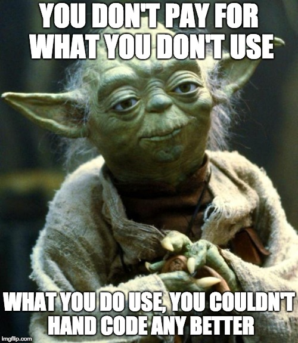Build system
What should a good build system provide?
- Compilation for different targets/platforms
- Dependency resolution
- Optional features
- Custom build steps
- Automated testing
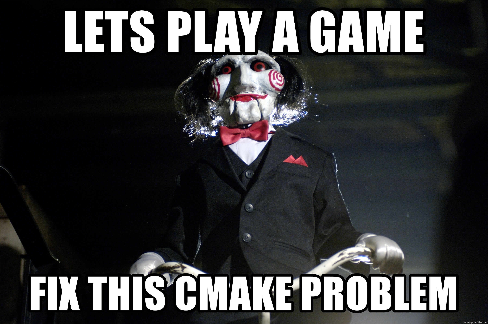
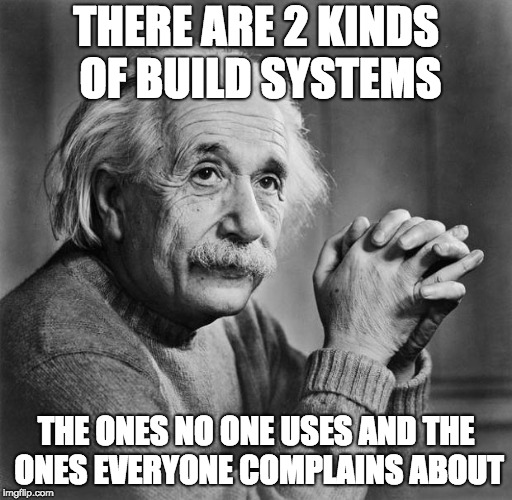
- ffmpeg: make
- v8: GN, GYP
- SpiderMonkey: autoconf
- JavaScriptCore: Xcode
- Chromium: ninja
- Cocos2dx: cmake
- Boost: b2, bjam
- OpenSSL: custom
- Blender: SCons
- Others: Konan, Bazel

Rust Build System: Cargo
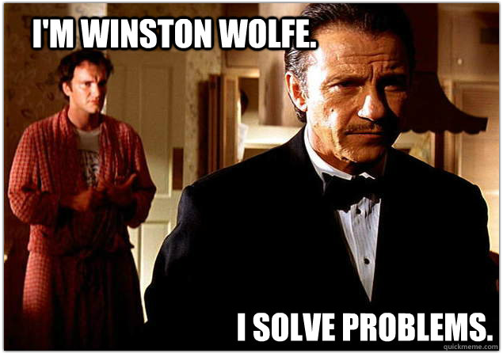
Cargo
Super easy to set up
[package]
name = "my-binary"
version = "0.1.0"
[dependencies]
uuid = "1.0"
my-library = { git = 'https://github.com/mortimer/my-library.git' }
my-renderer = { path = '../..//my-renderer' }
Super easy to build & run
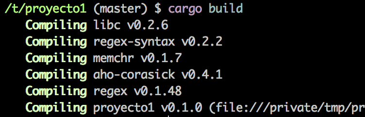
Cargo
Multiple platform compilations for free
#Desktop
cargo build
#Android
cargo build --target=armv7-linux-androideabi
#iOS
cargo build --target=aarch64-apple-ios
#WebAssembly
cargo build --target=wasm32-unknown-unknown
Development workflow
[replace]
# Compile project with a SpiderMonkey fork
mozjs_sys = {path = '/home/mortimer/Projects/mozjs_fork'}
Optional features in C++
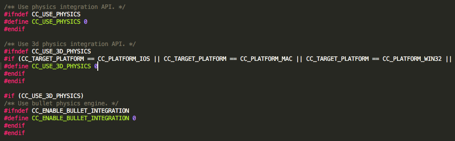
- Deep into the header code
- Can't validate errors
- Warning: #ifdef vs #define FEATURE_FLAG 0
- No dependency resolution...
Optional features in C++
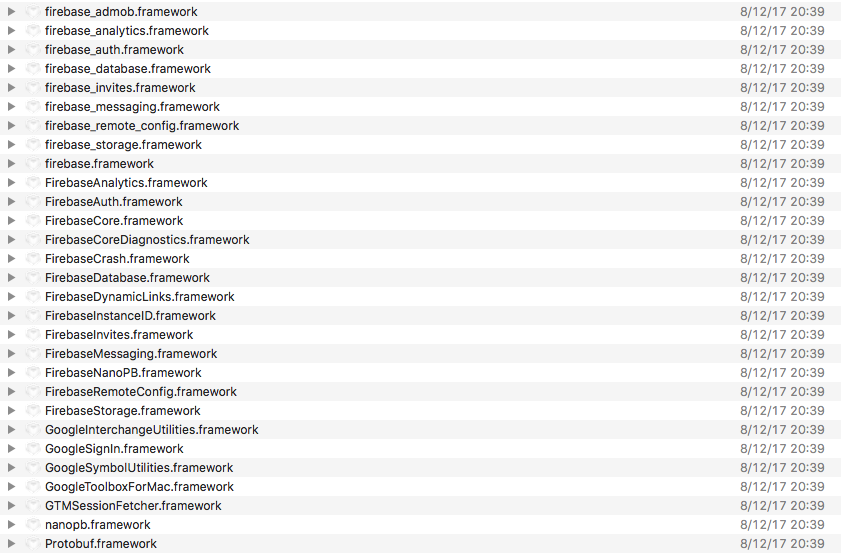
Optional features in Rust/Cargo
Easy & elegant set up
[features]
default = ["openvr", "mock"]
openvr = ["libloading"]
mock = []
googlevr = ["gvr-sys"]
oculusvr = ["ovr-mobile-sys"]
Easy & elegant optional code
#[cfg(feature = "oculusvr")]
mod oculusvr;
Ease & safe to use
[dependencies]
rust-webvr = {features = ["openvr", "googlevr", "oculusvr"], version = "0.9"}
Reliable platform detection in C++
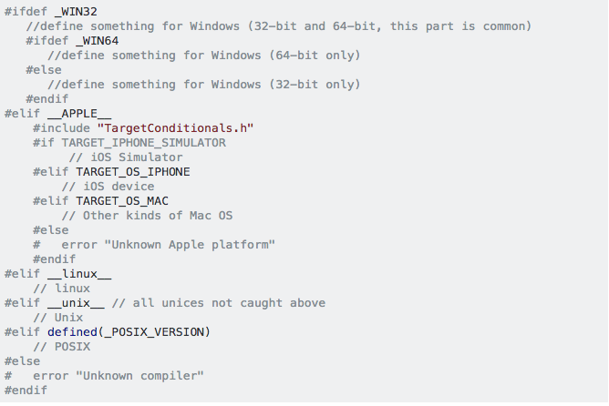
Reliable platform detecion in Rust
#[cfg(target_os = "linux")]
fn platform_hello() {
println!("You are running Linux!");
}
#[cfg(target_os = "android")]
fn platform_hello() {
println!("You are running Android!");
}
#[cfg(target_os = "ios")]
fn platform_hello() {
println!("You are running iOS!");
}
#[cfg(target_os = "macos")]
fn platform_hello() {
println!("You are running MacOS!");
}
C++ 'modules'
#include <string>
int main() {
return 0;
}
Show preprocessor output
gcc -E test.cpp > result.text
22,020 lines!
template
struct __attribute__ ((__type_visibility__("default"))) owner_less >
: binary_function, weak_ptr<_Tp>, bool>
{
typedef bool result_type;
__attribute__ ((__visibility__("hidden"), __always_inline__))
bool operator()( weak_ptr<_Tp> const& __x, weak_ptr<_Tp> const& __y) const
{return __x.owner_before(__y);}
__attribute__ ((__visibility__("hidden"), __always_inline__))
bool operator()(shared_ptr<_Tp> const& __x, weak_ptr<_Tp> const& __y) const
{return __x.owner_before(__y);}
__attribute__ ((__visibility__("hidden"), __always_inline__))
bool operator()( weak_ptr<_Tp> const& __x, shared_ptr<_Tp> const& __y) const
{return __x.owner_before(__y);}
};
Problems of current C++ 'modules'
- Compile-time scalability
- Fragility: textual inclusion, macro
- Conventional workarounds: include guard, pragma
- Tool confusion: include orders, etc.
Tim Sweeney about C++17 Modules working draft
“I'm trying to understand the rationale for the oddity of the C++ modules TS”
Rust modules
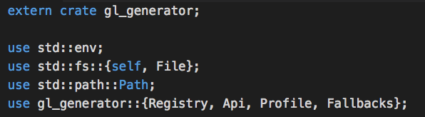
Unit testing
C++: Research & set up testing framework
#include <gtest/gtest.h>
TEST(MyTestSuitName, MyTestCaseName) {
int actual = 1;
EXPECT_GT(actual, 0);
EXPECT_EQ(1, actual) << "Should be equal to one";
}
Rust: Built-in Unit testing
#[test]
fn it_works() {
assert_eq!(4, adder::add_two(2));
}
Run all tests
$) cargo test
Compiling adder v0.0.1 (file:///home/you/projects/adder)
Running target/adder-91b3e234d4ed382a
running 1 test
test tests::it_works ... ok
Custom build steps in C++
- Python
- Confusing CMAKE COMMAND syntax
- Custom
vs
Custom build steps Rust
- Consistent with the language
fn main() {
if let Ok(aar_out_dir) = env::var("AAR_OUT_DIR") {
fs::copy(&Path::new("src/api/googlevr/aar/GVRService.aar"),
&Path::new(&aar_out_dir).join("GVRService.aar")).unwrap();
fs::copy(&Path::new("src/api/oculusvr/aar/OVRService.aar"),
&Path::new(&aar_out_dir).join("OVRService.aar")).unwrap();
}
}
Other modern build systems: Gradle
Other modern build systems: NPM
C++ coding style guide
C++ coding style guide: Mozilla
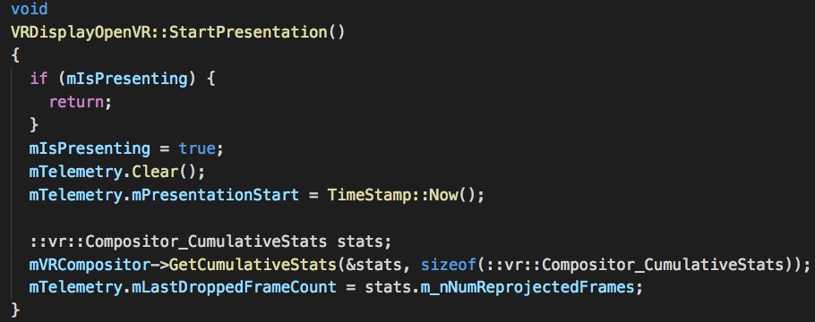
C++ coding style guide: Chromium
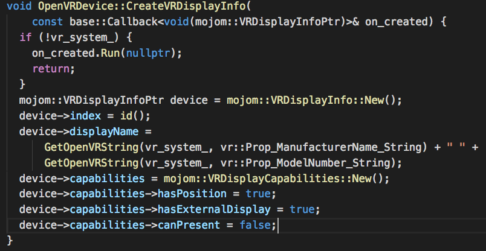
C++ coding style guide: Oculus
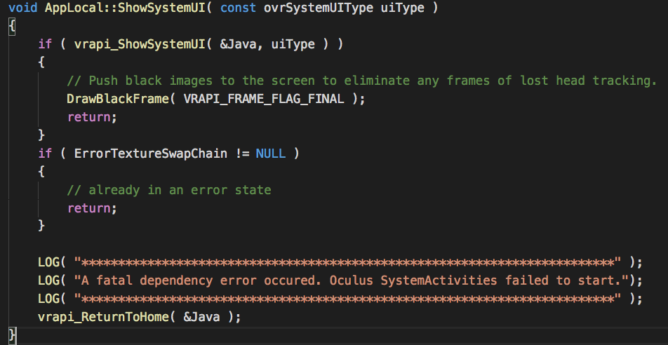
Rust coding style guide
- One less thing to worry about
- Consistency is very valuable
warning: variable `frameData` should have
a snake case name such as `frame_data`
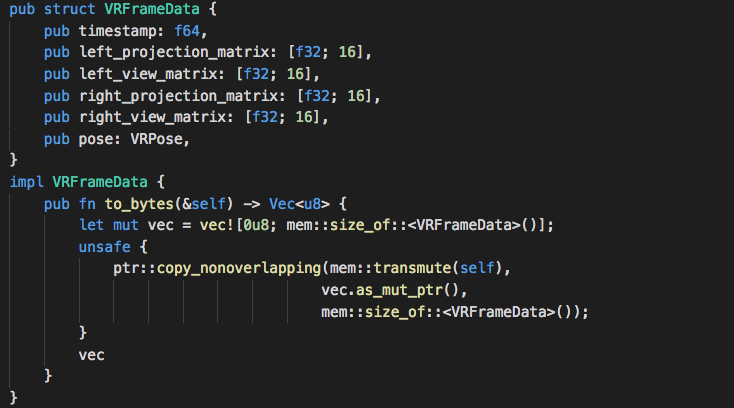
Type system
- Rust: super strict typing
- C++: strict typing
- JavaScript: untyped
Rust, C/C++, Javascript
C++ bad defaults: const and copies
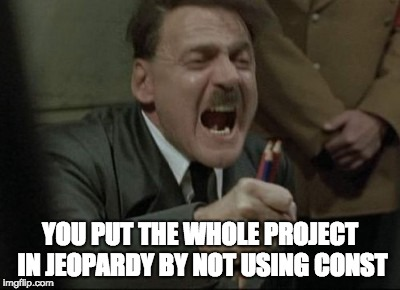
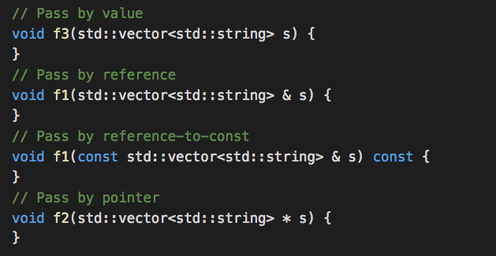
Rust: good defaults
- Inmutability & borrow/move semantics
- Explicit copies: Vec::clone()
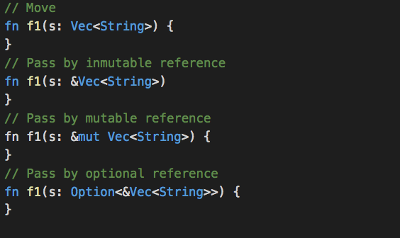
Rust compile time code safety
e.g.: Concurrency without data races
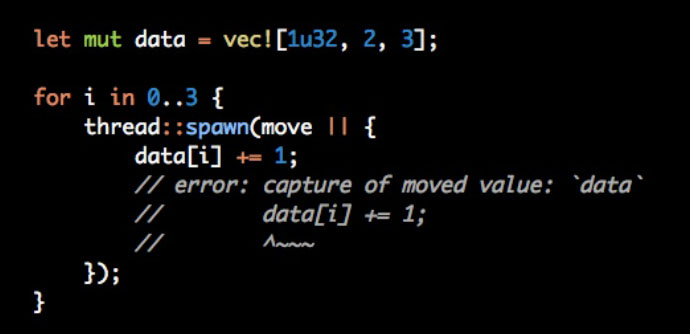
Rust compile time code safety
e.g.: Concurrency without data races
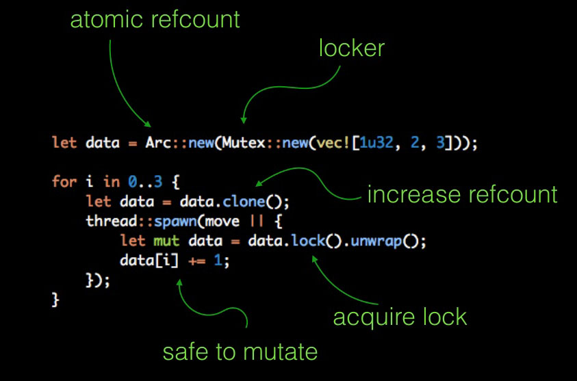
Rust compile time code safety
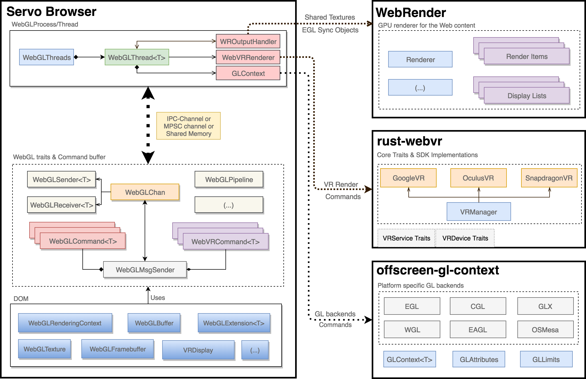
C++ experts don't make errors
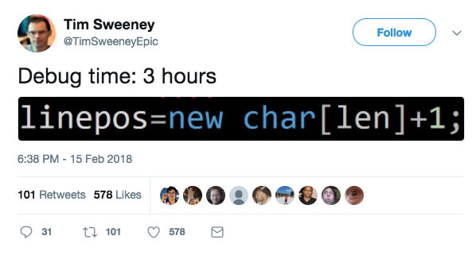
C++ experts don't make errors
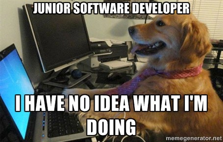
C++ experts don't make errors
C++ experts don't make errors
“std::string is responsible for almost half of all allocations in the Chrome browser process; please be careful how you use it!”
C++ experts don't make errors
Errors cost money
Errors can cost a company it's reputation
Metaprogramming & compile time code
C++ macros: Simple text substitution
#define FIVE_TIMES(x) 5 * x
int main() {
printf("%d\n", FIVE_TIMES(2 + 3));
return 0;
}
Variable captures
#define LOG(msg) do { \
int state = get_log_state(); \
if (state > 0) { \
printf("log(%d): %s\n", state, msg); \
} \
} while (0)
const char *state = "It's over 9000!";
LOG(state);
Rust hygienic macro system
macro expansion happens in a distinct syntax context
macro_rules! log {
($msg:expr) => {{
let state: i32 = get_log_state();
if state > 0 {
println!("log({}): {}", state, $msg);
}
}};
}
Procedural & built-in macros
#[derive(Debug, Clone)]
pub struct VRFrameData {
pub timestamp: f64,
pub left_projection_matrix: [f32; 16],
pub left_view_matrix: [f32; 16],
pub right_projection_matrix: [f32; 16],
pub right_view_matrix: [f32; 16],
pub pose: VRPose,
}
println!("{:?}", frame_data);
Compile time code
constexpr factorial (int n){
return n > 0 ? n * factorial( n - 1 ) : 1;
}
constexpr int value = factorial(10);
println!("factorial: %d", value);
- Macro is another language into the language
- constexpr is very powerful, still limited in Rust.
Compile time string concatenation
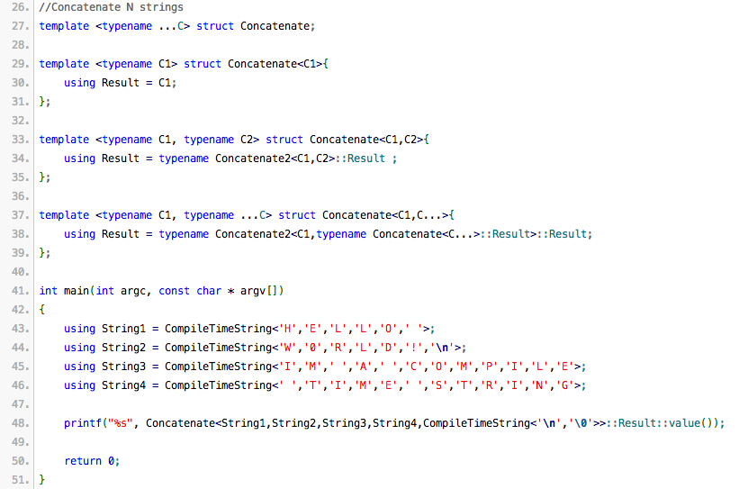Traits vs class hierarchies
Rust favors "composition over inheritance”
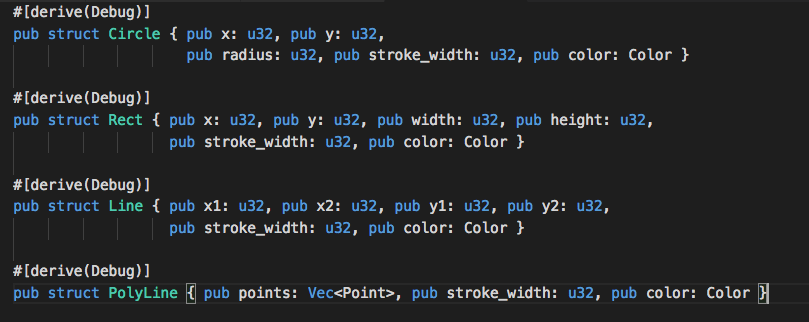Traits vs class hierarchies
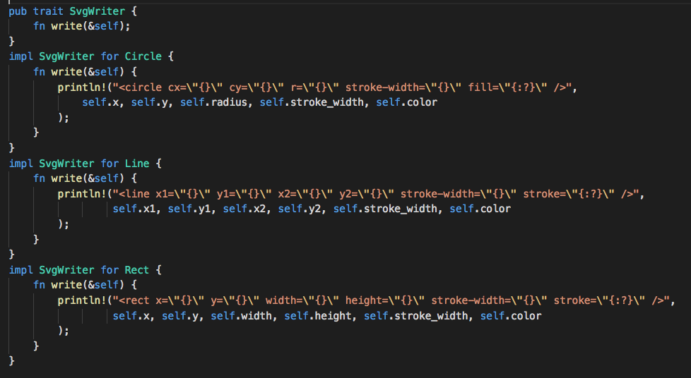Traits vs class hierarchies
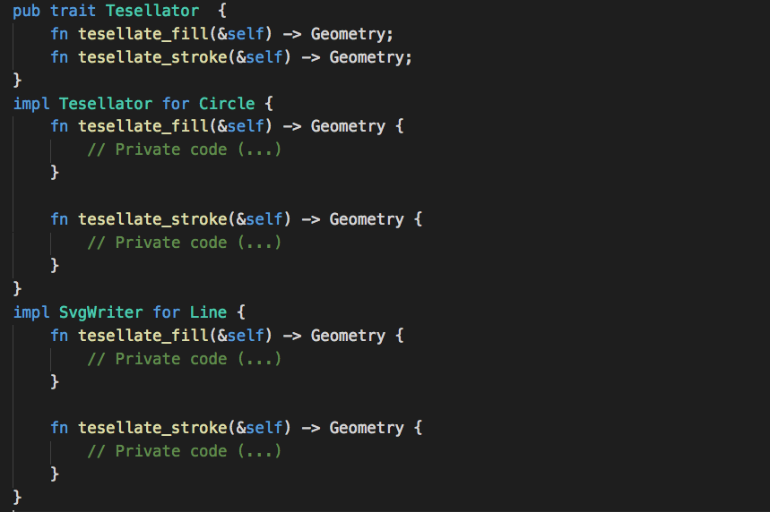Traits vs class hierarchies
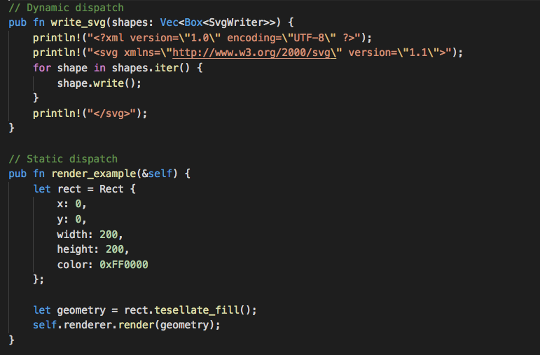Class hierarchies
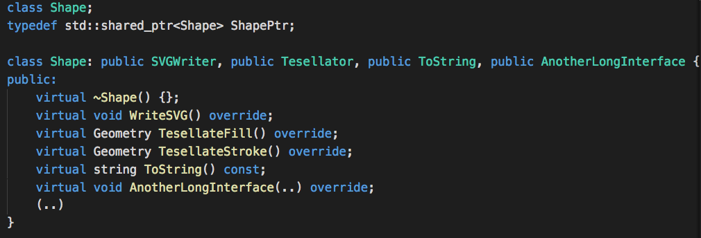- vtable vs trait pointers
- Template alternative
- C++ concepts
Error handling in C++: Exceptions
- Handling exceptions is not enforced by the type-system
- Dispatching to the catch block is orders of magnitude slower
Error handling in C++: Error codes
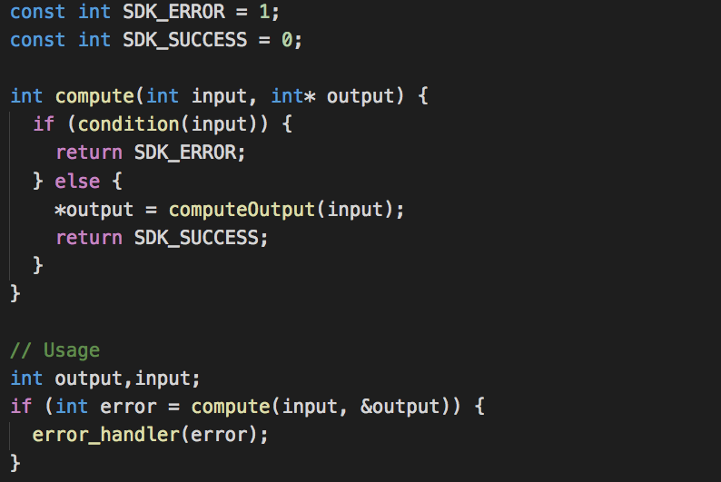- Error-codes are ancient and used everywhere
- Functional composition is hard
- Out-parameters different memory layout
Error handling in Rust
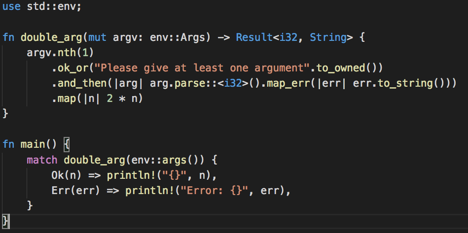- Option<T>, Result<T> Tuples, etc
- Super powerful enums
- C++ std::expected
Conclussions
- Is Rust a valid C/C++ alternative?
- Is Rust ready to use for real projects?
- Is Rust difficult to learn?
- Rust vs C++ tooling?
- Slow compilation times?